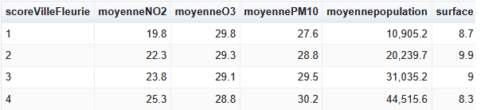

Bienvenue sur notre projet de Web Sémantique
Scrollez pour découvrir notre analyse
Les villes Fleuries sont elles moins polluées ?
Une analyse de Alexandre Charpentier et Nicolas Vouilloux

Sommaire
- Contexte
- Méthodologie
- Les outils
- Dataset
- Transformation
- Enrichissement
- Site Web
- Le label Villes Fleuries
- Étude
- Partie 1. Premiers résultats
- Partie 2. Questionnement
- Partie 3. Enrichissement
- Partie 4. Seconds résultats
- Analyse
- Conclusion
- Pour aller plus loin...
Contexte
Méthodologie
Les outils
Ce projet est basé sur SparQL : langage de requête pour interroger les données RDF.
Parmi les outils que nous avons utilisés pour notre projet, on retrouve :
- - GraphDB : base de données orientée graphe pour stocker et interroger nos données.
- - OnToTextRefine : outil pour nettoyer et structurer les données avant intégration.
- - WikiData : source d’informations pour enrichir nos données existantes.
- - JS / Bootstrap / Python / HTML…
Méthodologie
Données
Pour notre étude, nous avons choisis 2 datasets :
- - Les Communes d'Île-de-France labellisées Villes et Villages Fleuris 2016
- - Indices Qualité de l'air (Citeair) journaliers par polluant sur l'Île-de-France
Ces datasets sont fournis par le gouvernement français et sont disponibles sur data.gouv.fr
Choix
L’idée de travailler sur les villes fleuries nous est venue en nous baladant sur le site. Ensuite, nous avons choisi assez naturellement d’étudier le rapport entre le label et la pollution des communes. Nous avons donc recherché un dataset qui pouvait nous aider pour cette étude, et celui sur les indices de qualité de l’air semblait parfait pour notre usage.
Périmètre
Nous avons choisi de nous concentrer sur l’Île-de-France pour plusieurs raisons : Premièrement, la région est densément peuplée et comprend de nombreuses communes labellisées Villes et Villages Fleuris, ce qui offre un échantillon pertinent pour notre analyse. Deuxièmement, la qualité de l’air est un enjeu majeur dans cette région en raison de la forte activité urbaine et industrielle. De plus, limiter notre champ d’étude nous a permis de mieux gérer la quantité et la qualité des données à traiter. Pour les mêmes raisons, les données datent uniquement de 2016.
Méthodologie
Transformation
Les fichiers CSV bruts de data.gouv sont de bonne qualité mais n’étaient pas assez exhaustifs pour notre étude. Nous avons donc, grâce à des scripts Python, adapté leur contenu.
Le problème principal était que le dataset pollution faisait référence aux communes par leur code INSEE, alors que celui des villes fleuries utilisait le code postal.
Pour assembler les deux, nous avons donc eu recours à un troisième CSV, également issu de data.gouv, qui associe les codes INSEE et postaux.
Grâce à Python, nous avons ajouté le code INSEE aux villes fleuries et effectué un peu de nettoyage.
Enrichissement
Une fois nos données prêtes et nettoyées, nous les avons enrichies avec des données de WikiData.
Nous avons choisi d’ajouter pour chaque commune sa population et sa surface (en km²).
Le label Villes Fleuries
Présentation
De son nom complet, Label Villes et Villages Fleuris, est un label porté par le CNVVF (Conseil National des Villes et Villages Fleuris)
Il a pour but de récompenser les communes françaises qui s'engagent dans une démarche de qualité de vie par le biais d'un aménagement paysager et d'une gestion durable de l'environnement.
Le label est attribué selon un système de "fleurs", allant de 1 à 4, ce label est évalué par un jury qui visite la commune et analyse la cohérence du projet municipal, la diversité du patrimoine végétal, la qualité des aménagements et la mise en valeur de l’espace public. L’objectif est de promouvoir des villes plus agréables, durables et attractives pour leurs habitants et visiteurs.
Étude
Premiers Résultats
Pour débuter notre étude, nous allons présenter nos premiers résultats.
Par la suite, nous irons plus loin dans l’analyse, mais nous avons construit cette étude de manière progressive. Ces résultats préliminaires constituent donc la première étape de notre cheminement.
Requête
Nous avons commencé par intérroger notre base pour obtenir les moyennes de pollution par score de Villes Fleuries
SELECT (?score AS ?scoreVilleFleurie)
(ROUND(AVG(xsd:decimal(?no2)) * 10) / 10 AS ?moyenneNO2)
(ROUND(AVG(xsd:decimal(?o3)) * 10) / 10 AS ?moyenneO3)
(ROUND(AVG(xsd:decimal(?pm10)) * 10) / 10 AS ?moyennePM10)
WHERE {
?com rdf:type rcw:Commune ;
rcw:scoreFleur ?score ;
rcw:ville ?ville ;
rcw:no2 ?no2 ;
rcw:o3 ?o3 ;
rcw:pm10 ?pm10 .
}
GROUP BY ?score
ORDER BY ?scoreVilleFleurie
Les résultats obtenus montrent une tendance intéressante : plus la commune est fleurie, plus elle est polluée et cela augmente même graduellement avec le score.
Questionnement
Ces résultats sont pour le moins... étonnants !
Pour ainsi dire, c'est même l'inverse des résultats escomptés.
À ce moment de notre étude, nous avons réalisé que nos résultats pourraient ne pas être fiables. En effet, si nous pouvions nous attendre à ce qu'un label ne règle pas magiquement la pollution industrielle, on ne pouvait néanmoins pas s'attendre à ce qu'elle l'aggrave.
Nous avons donc décidé de nous pencher sur les possibles biais de notre étude pour essayer d'y remédier.
Après réflexion, nous avons identifié plusieurs facteurs pouvant impacter nos résultats :
- - La taille des communes : les grandes villes sont souvent plus riches
- - La population : les villes plus peuplées peuvent avoir davantage de pollution due au trafic et à l'industrie
- - Le Label : quels sont les critères de notation et sa fiabilité ? A qui le titre est-il desservit ?
En conclusion, nous avons besoin d'élargir notre étude pour pondérer nos moyennes.
Pour corriger ces biais, nous avons décidé d'enrichir notre dataset avec des informations supplémentaires sur chaque commune, notamment leur population et leur superficie.
Grâce à ces nouvelles données, nous pouvons espérer découvrir les raisons sous-jacentes de ce résultat étonnant.
Enrichissement
Enrichissement des données
Pour affiner notre étude et corriger les biais identifiés dans les premiers résultats, nous avons décidé d’enrichir notre dataset avec deux informations essentielles pour chaque commune : la population en 2016 et la surface (en km²).
Le choix de ces deux données nous est apparu comme le plus pertinent pour compléter notre analyse :
- - La population : plus une commune est peuplée, plus elle est susceptible de générer de la pollution (trafic, chauffage, industrie…).
- - La surface : utile pour mesurer l’étendue réelle et calculer ensuite la densité de population.
Ces éléments nous permettent ensuite de calculer la densité de population, bien plus représentative de la pression humaine exercée sur le territoire.
Pourquoi seulement ces données ?
Nous aurions souhaité intégrer d’autres variables, comme le budget annuel des communes consacré à l’environnement ou aux espaces verts, qui aurait pu constituer un indicateur intéressant.
Cependant, ces données étaient soit indisponibles, soit trop incomplètes ou incohérentes selon les communes. Elles ne pouvaient donc pas être intégrées de manière fiable dans notre étude.
Nous reviendrons néanmoins sur ces pistes dans la section « Pour aller plus loin ».
Enrichissement
Exemple d’une commune dans GraphDB
Après enrichissement, chaque commune est décrite par un ensemble de propriétés : son nom, son code INSEE, son score de fleurs, les niveaux mesurés de pollution, la population, la surface ainsi que la densité calculée.
rcw:Commune91461
rdf:type rcw:Commune ;
rcw:nom "OLLAINVILLE" ;
rcw:insee "91461" ;
rcw:scoreFleur 2 ;
rcw:no2 18.75 ;
rcw:o3 30.30 ;
rcw:pm10 25.91 ;
rcw:population2016 4795 ;
rcw:surface 11.33 ;
rcw:densitePopulation 423.9 .
Autres angles d'analyse possibles
D’autres pistes auraient pu être explorées : corrélation entre espaces verts et pollution, impact du réseau de transport, typologie des communes, ou encore évolution temporelle. Elles sortaient cependant du périmètre de notre étude.
Seconds résultats
Avec nos nouvelles données, il était temps de revoir nos moyennes
Requête
Voici notre nouvelle requête incluant la population et la surface des communes avec un calcul de leur densité :
SELECT (?score AS ?scoreVilleFleurie)
(ROUND(AVG(xsd:decimal(?no2)) * 10) / 10 AS ?moyenneNO2)
(ROUND(AVG(xsd:decimal(?o3)) * 10) / 10 AS ?moyenneO3)
(ROUND(AVG(xsd:decimal(?pm10)) * 10) / 10 AS ?moyennePM10)
(ROUND(AVG(xsd:decimal(?population2016)) * 10) / 10 AS ?moyennepopulation)
(ROUND(AVG(xsd:decimal(?surface)) * 10) / 10 AS ?surface)
(ROUND(AVG(xsd:decimal(?densite)) * 10) / 10 AS ?moyenneDensite)
WHERE {
?com rdf:type rcw:Commune;
rcw:scoreFleur ?score;
rcw:ville ?ville;
rcw:no2 ?no2 ;
rcw:o3 ?o3 ;
rcw:pm10 ?pm10 ;
rcw:population2016 ?population2016 ;
rcw:surface ?surface .
BIND(xsd:decimal(?population2016) / xsd:decimal(?surface) AS ?densite)
}
GROUP BY ?score ORDER BY ?scoreVilleFleurie
Cette reqûete est beaucoup plus complète. Analysons maintenant ce qu'il en ressors.
Seconds résultats
Résultats
Voici les résultats obtenus:
Sous forme de tableau :
Analyse
Premier graphe
Analysons en détail le graphe de population.
Les résultats sont très clairs
On remarque que la population moyenne des communes augmente fortement avec le score fleur.
Cela suggère que les villes plus peuplées ont tendance à obtenir de meilleurs scores dans le label Villes et Villages Fleuris.
Ce constat peut s'expliquer par le fait que les grandes villes disposent souvent de ressources financières et humaines plus importantes pour investir dans l'aménagement paysager et la gestion des espaces verts.
Mais ca n'explique pas tout !
Les communes plus peuplées ont peut-être les moyens financiers, mais le cadre, souvent très "urbain", n'est pas favorable à de telles notes. De plus, on ne peut pas vraiment dire par expérience que les villes les plus peuplées sont les plus belles.
D'autres facteurs, tels que la densité de population et la surface des communes, doivent également être pris en compte pour obtenir une image complète de la situation.
Deuxième graphe
Ici, c'est plus mitigé...
La tendance est moins marquée que pour la population, mais on peut tout de même observer que, de manière générale, les communes plus grandes ont tendance à obtenir un score légèrement inférieur.
Cela peut s’expliquer par le fait que les communes étendues ont souvent des zones périphériques ou rurales moins fleuries, ce qui peut pénaliser leur note globale.
De plus, l’entretien des espaces verts sur une grande superficie demande davantage de ressources et d’organisation, ce qui peut être plus difficile à gérer pour certaines communes.
En fait, les villes plus peuplées sont par définition assez grandes, mais disposent des ressources nécessaires à leur entretien. Les communes moins peuplées, mais ayant une surface comparable, doivent fournir un même niveau d'entretien avec moins de ressources.
Ainsi, bien que la taille puisse offrir plus d’espace pour fleurir, elle n’entraîne pas systématiquement un meilleur score au label Villes et Villages Fleuris.
Pour compléter notre étude, il faut s'intéreser à la densité de population....
Troisième graphe
Ce graphe synthétise les deux précédents.
Il montre la densité de population (habitants par km²) pour chaque score Fleur.
On constate clairement que la densité augmente avec le score, ce qui explique en grande partie les tendances observées sur la population et la surface des communes.
Les communes qui réusissent le mieux pour le label sont celle qui possèdent le plus grand ratio entre leur population et leur surface. Cela appuie nos précèdentes observations.
Avec ces nouveaux résultats en tête, il est temps de proposer notre théorie finale
Conclusion
Théorie finale
Le label Villes et Villages Fleuris récompense les communes capables de fournir l'effort nécessaire pour offrir un cadre de vie naturel et agréable à leurs habitants, plutôt que de se limiter à simplement "fleurir" leur territoire.
Explication
Pour appuyer cette théorie, nous avons déjà observé que les communes plus densément peuplées obtiennent de meilleurs scores. Elles disposent de ressources plus importantes et ont un intérêt accru à investir dans l'entretien et l'aménagement des espaces verts afin d'améliorer la qualité de vie de leurs habitants.
Mais, il reste des questions en suspens.
Et la polution dans tout ça ?
Comme nous l'avons observé, les communes avec un meilleur score sont en général plus polluées. Cela s'explique, selon notre théorie, parce qu'en fait le label ne prendrais pas réellement en compte le niveau de pollution mais, plutôt celle qui veulent l'être moins. En fait, ce sont même les communes les plus polluées qui ont tout intéret à s'engager pour la biodiversité !
Mais alors, à quoi sert le Label ?
Si le label existe, c'est avant tout dans le but de promouvoir et d'encourager les communes qui s'investissent.
Il sert également à valoriser le cadre de vie, à sensibiliser les élus et les habitants à l'importance des espaces verts et à créer une dynamique locale autour de l'embellissement et de l'entretien des communes.
En ce sens, le label n'est pas seulement une distinction esthétique, mais un véritable outil pour stimuler l'engagement et améliorer la qualité de vie dans les territoires.
En bonus, nous nous intéresserons aux critères de notation pour creuser le sujet !
Conclusion
Qui réussi le mieux ?
Voici les résultats à l'intérogation du graph :
RUNGIS, LE MEE-SUR-SEINE, CLAYE SOUILLY, LEVALLOIS-PERRET, MAISONS ALFORT, COURBEVOIE, RUEIL-MALMAISON, MEUDON, MEAUX, MELUN, CRETEIL, VELIZY VILLACOUBLAY, LE VESINET, GAGNY, STE GENEVIEVE DES BOIS, AULNAY SOUS BOIS, LE PLESSIS-ROBINSON, SOISY-SOUS-MONTMORENCY
Sauf exception, ces communes sont toutes de grandes communes de l'Ile-de-France qui disposent de grand moyens. On notera tout de même l'absence de Paris !
Combien de communes sont labélisées ?
Selon nos données, seuls ~300 communes sur les 1 276 en Île-de-France sont labellisées, soit un peu moins d'un quart des communes !